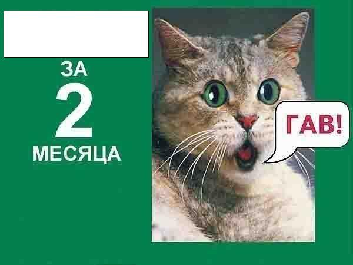

Чемпионат коллегиума 2012 10-е классы
Тур 1
Уважаемые знатоки! Вас приветствует город Краснодар, знатоки из которого подготовили этот тур.
Авторы вопросов: Марина и Юлия Бондаренко, Иван Жидов (Краснодар), Елена Каминская (Одесса), Максим Егоров (Москва-Одесса).
Авторы благодарят за ценную помощь Елену Каминскую (Одесса)
Авторы просят вас воздержаться от обсуждения вопросов в интернете до 1 ноября 2012 года.
Вопрос 1.
«Внимание, черный ящик!» - провозгласил представитель одной из фирм, явившись на юбилей фирмы-партнера. Каково же было удивление юбиляров, обнаруживших в черном ящике зажигалку, бутылочку минеральной воды и мелкую монетку. Все стало понятным после того, как гость произнес: «Мы желаем вам успешно СДЕЛАТЬ ЭТО!». Какую известную фразу мы заменили словами СДЕЛАТЬ ЭТО?
Ответ: пройти огонь, воду и медные трубы.
Источник: Cosmopolitan, декабрь, 2011
Автор: Юлия Бондаренко (Краснодар)
Вопрос 2.
РАЗДАТКА

Внимание, вопрос. Что рекламирует плакат, на котором мы закрыли фрагмента текста?
Ответ: курсы иностранных языков
Источник: http://joyreactor.cc/post/211035
Автор: Марина Бондаренко (Краснодар)
Вопрос 3.
РАЗДАТКА
К деду в деревню приехал Илья
и спрятались все от него впопыхах:
в канаве два гуся, под дубом свинья,
собака рычала, а кот убегал.
Уважаемые знатоки! Надеемся, что вы хорошо знакомы как с испанской литературой начала XVII века, так и с французской литературой конца XVII века. В последней строке розданного вам текста каждый из глаголов является заменой двух словосочетаний из двух слов каждое. Воспроизведите оба словосочетания.
Ответ: на сене, в сапогах
Комментарий: обыгрываются названия произведений Ш. Перро «Кот в сапогах» и Лопе де Вега «Собака на сене»
Источник: бескрылка, написанная автором вопроса
Автор: Марина Бондаренко (Краснодар)
Вопрос 4.
В романе «Сто лет одиночества» женщина из маленького городка закричала: «Там… что-то ужасное, – что-то вроде кухни на колесах, и тащит за собой целый город!» Что впервые увидела эта женщина?
Ответ: поезд.
Комментарий: кухню ей напомнил паровоз с дымящей трубой.
Источник: http://www.serann.ru/t/t370.html»
Автор: Елена Каминская (Одесса)
Вопрос 5.
Поговорим о кулинарных предпочтениях. Недавно в селе ЧубИнском под Киевом повара одного из ресторанов сварили 5 тонн борща. Для заправки рекордного блюда они использовали 27 кг сала, столько же соли и 10 кг чеснока. В процессе подготовки было почищено 350 кг картофеля и около тонны других овощей, в том числе 400 кг того, без которого борщ не был бы борщом. Назовите этот овощ.
Ответ: свекла
Комментарий: согласно кулинарной энциклопедии, основой борща является свекла. Без нее блюдо называется овощным супом или щами
Источники: http://podrobnosti.ua/podrobnosti/2010/10/02/720050.html, Культура питания. Энциклопедический справочник.
Автор: Марина Бондаренко (Краснодар)
Вопрос 6.
РАЗДАТКА
Когда мы солнце отдадим
На расправу тёмным силам,
Три цифры будут править бал.
Число …
На шлеме смотрится красиво.
***
В последний огненный полёт
Улетают книги-птицы –
Их не вернуть уже назад.
Шипит змеёй мой огнемёт…
Перед вами отрывки из текста песни «Симфония огня» из репертуара группы «Ария».
Какие цифры мы пропустили в четвертой строке?
Ответ: 451
Комментарий: в тексте: «число четыре пять один»
К вопросу есть музыкальный комментарий. Музыкальный фрагмент можно поставить после оглашения правильного ответа!
Источник: http://tekst-pesni.com/page/tekst-pesni-arija-simfonija-ognja-slova
Автор: Иван Жидов (Краснодар)
Запас
Вопрос 7.
Из истории интеллектуальных игр. Первая игра «Что? Где? Когда?» прошла 4 сентября 1975 года. В 1976 появился волчок. С 1977 года знатоки получили целую минуту на обсуждение вопроса. А символ того, что впервые появилось 24 января 1979 года и до сих пор является неотъемлемой частью телеигры, вы мне изобразите через минуту.
Ответ: сдается карточка с изображением скрипичного ключа
Источник: http://chgk.tvigra.ru/ Энциклопедия. Музыкальная пауза
Автор: Марина Бондаренко (Краснодар)
Вопрос 8.
В вопросе есть замена. Согласно известному источнику, в каждом КАРЛСОНЕ может содержаться 200 или, даже, 500 граммов циклотриметилентринитрамина, тринитротолуола или этилендинитрамина. Какие два слова мы заменили словом КАРЛСОН?
Ответ: маленький ребенок
Комментарий: В каждом маленьком ребенке и мальчишке, и девчонке, есть по 200 грамм взрывчатки или, даже, полкило…
Источники: м/ф «Обезьянки, вперед!» Википедия, статья «Взрывчатые вещества»
Автор: Марина Бондаренко (Краснодар)
Вопрос 9.
На квенье лилипуты говорили давно, еще во времена, описываемые в известном романе. Этот язык успел выйти из употребления, а лилипуты освоили синдарин, но для обоих наречий система письменности осталась та же - тенгвар. Какое слово в этом вопросе мы заменили?
Ответ: эльфы
Комментарий: роман Толкиена «Властелин колец»
Источник: «Твой 1-й взрослый журнал» № 1, 2008
Автор: Марина Бондаренко (Краснодар)
Вопрос 10.
РАЗДАТКА
БЛИЦ. На обсуждение каждого вопроса отводится 20 секунд. Все три ответа сдаются на одной карточке.
Перед вами минимализм-постеры популярных отечественных фильмов.
- Назовите имя и отчество заглавного героя первого фильма.
- Назовите фамилию автора, по произведению которого снят второй фильм.
- Назовите числительное, которое упоминается в названии третьего фильма.
Ответ: Иван Васильевич, Булгаков, 12
Комментарии: «Иван Васильевич меняет профессию», «Собачье сердце», «12 стульев» - хорошо видны отпечатки ножек
Источник: http://hotdesignfor.us/news/pages/minimalizm-postery-filmov/other_minimalizm_posters
Автор: Марина Бондаренко (Краснодар)
Вопрос 11.
Внимание, в вопросе слова ИКС, ИГРЕК и ЗЕТ являются заменами.
ИКС равен 17 ИГРЕКАМ, что составляет 493 ЗЕТА. Один ИКС также приравнивается к пяти фунтам стерлингов по курсу на 12 марта 2001 года. Произвести обмен по такому курсу может банк, который в 2007 году журнал «Forbes» поставил на 22 место в списке богатейших вымышленных компаний, оценив в 4,4 миллиарда долларов. Назовите улицу, на которой он расположен.
Ответ: Косой Переулок
Зачет: Diagon Alley, Диагон-аллея
Комментарий: речь идет о банке Гринготтс, который находится на Diagon Alley - улице в магической части Лондона, 1 галеон=17 сиклям, 1 сикль=29 нутам.
Автор: Марина Бондаренко (Краснодар)
Вопрос 12.
К служащим элитарных гвардейских частей всегда предъявлялись определенные требования. Так, например, с 1506 года служащие весьма ограниченного контингента войск должны иметь рост не ниже 174 см, возраст – от 19 до 30 лет, а еще они должны быть холостыми и исповедовать католичество. Надо отметить, что жалование они получают 1200 евро в месяц, а униформа шьется каждому индивидуально. Мы не просим назвать место их службы. Ответьте, уроженцами какого государства все они являются.
Ответ: Швейцарии
Комментарий: речь идет о гвардейцах Ватикана, которые, согласно традиции, набираются из граждан Швейцарии
Источник: «Вокруг света» № 1, 2008
Автор: Марина Бондаренко (Краснодар)
Вопрос 13.
В вопросе есть замена. АЛЬФАМИ были Микеланджело, Цезарь, Жанна Д'Арк, Мэрилин Монро, Пол Маккартни и многие другие. Назовите фамилию автора знаменитого «АЛЬФЫ», который тоже был АЛЬФОЙ.
Ответ: Н. Лесков
Комментарий: альфа – левша http://olga-derkach.livejournal.com/ http://www.sovsekretno.ru/magazines/article/546
Автор: Марина Бондаренко (Краснодар)
Вопрос 14.
1 августа 2011 программа «Сегодня» на НТВ рассказала о том, как заключенные одной немецкой тюрьмы снимают фильмы о своих сокамерниках. Название репортажа состояло из трех слов, два из которых отличались одной буквой. Воспроизведите это название.
Ответ: «Камера в камере»
Источник: вышеупомянутая программа
Автор: Марина Бондаренко (Краснодар)
Тур 2
Казалось бы, при чем здесь Толкин?
1. По-немецки числительное "одиннадцать" звучит именно так.
Ответ: Эльф.
2. Именно так антропологи неформально назвали первобытных людей метрового роста, скелеты которых обнаружили пару лет назад в Индонезии; их научное название — Homo floresiensis.
Ответ: Хоббиты.
3. Именно это выстроили турки под Азовом на берегах Дона, чтобы преградить казакам выход в море.
Ответ: Две башни.
Авторы: Максим Поташев, Дмитрий Жарков
Дверь в лето. (Станислав Подзолков)
1. Именно так называют у нас ясные теплые дни ранней осени.
Ответ: Бабье лето.
2. Именно такое слово принято применять к людям, достигшим возраста полной дееспособности.
Ответ: Совершеннолетний.
3. Это произведение известного автора повествует о прихотливости любовного чувства, о его праве, подтвержденном чудом природы, которое материализуется волшебным миром леса, где правят Оберон, Титания и эльфы.
Ответ: "Сон в летнюю ночь" У. Шекспира.
Автор: «Большой» Станислав Подзолков
Такие разные кошки
1. Без этого приспособления ни один здравомыслящий электрик не полезет на столб.
Ответ: Кошка
2. Эту благородную кошку Нового Света называют кугуар или "серебряный лев", но нам о ней, скорее, напомнит производитель спорттоваров.
Ответ: Пума
3. Именно так называется специалист по разведению и содержанию кошек.
Ответ: Фелинолог
Автор: Максим Стасюк
Литература
1. Назовите каждую из трех частей поэмы Данте "Божественная комедия".
Ответ: "Ад", "Чистилище", "Рай".
2. Именно этот литературный герой встречается впервые в повести, изданной в 1887 году под названием "Этюд в алых тонах".
Ответ: Ш.Холмс.
3. Именно этот литературный и исторический персонаж носит титул "Всадник золотого копья".
Ответ: Понтий Пилат.
Автор: Байрам Кулиев
Музыка
1. Именно эта музыкальная группа назвалась "Жуками" по аналогии с популярными в то время в Англии группами "Сверчки" и "Муравьи".
Ответ: "Битлз".
2. Именно так звали молодого водителя грузовика, который пришел в 1953 году на студию фирмы "Сан", для того чтобы записать песню в подарок своей матери.
Ответ: Элвис Пресли.
3. Именно это музыкальная опера, получившая благословение от папы римского, была создана Эндрю Ллойд Веббером и Тимом Райсом.
Ответ: "Иисус Христос — суперзвезда".
Автор: Байрам Кулиев
Химия
1. Именно за эту способность смесь соляной и азотной кислоты получила название "царская водка".
Ответ: За способность растворять золото.
2. Дефлогистированный воздух, небесный воздух, жизненный воздух или основа воздуха жизни, а как мы его называем сейчас?
Ответ: Кислород.
3. Именно под этим названием известен нам газ, полученный при горении дерева и исследованный фламандским химиком Ван Гельмонтом, который сам химик назвал "лесным воздухом".
Ответ: Углекислый газ.
Автор: Байрам Кулиев
Запас
О Русь!
1. Именно так в эпоху Ивана III называли все иностранные монеты, название которых происходит от польского слова "золотой" или "красный".
Ответ: Червонец.
2. Именно такое название в скифской мифологии носило божество реки Днепр.
Ответ: Борисфен.
3. Именно это слово некоторые лингвисты связывают с древнеиндийским выражением "жертвенный хлеб", а другие с русским словом "корова".
Ответ: Каравай.
Автор: Байрам Кулиев
Животный Мир
1. Моряки считают, что появление именно этой птицы предвещает шторм.
Ответ: Буревестник.
2. Именно это животное древние китайцы считали воплощением человеколюбия и полагали одним из главных среди всех зверей.
Ответ: Единорог.
3. Именно это животное, считавшееся атрибутом богини Афродиты и Урании, в древней Греции стало символом женщины — хозяйки дома.
Ответ: Черепаха (добродетель греческих женщин — сидение дома).
Автор: Байрам Кулиев
Древняя Греция.
1. Именно такое название у древних греков носила река, которая омывает на крайнем Западе границы между миром жизни и смерти.
Ответ: Океан.
2. В благодарность за добрую жизнь Зевс поместил Икария, его дочь и собаку в созвездие Девы, а какое название получила звезда, которая появлялась на небе лишь в самое жаркое время года?
Ответ: Каникула ("собачка").
3. Именно такое имя носил верный пес Ориона, которого Зевс вознес на небо, чтобы небесному охотнику не было скучно одному.
Ответ: Сириус.
Автор: Байрам Кулиев
Тур 3
Вопрос 1
Техасские тюрьмы лишили осужденных на смерть права последней сигареты. Чем же мотивируют свое решение представители тюрем?
Ответ: Тем, что курение вредит здоровью.
Зачёт: По смыслу.
Источник(и): http://ntb.org.ua/ntb/relax/fact/18/
Автор: Руслан Головатюк (Винница)
Вопрос 2
Назовите человека, который, по словам Пабло Пикассо, был самым главным в мире собирателем его картин.
Ответ: [Пабло] Пикассо.
Зачёт: Он сам.
Источник(и): http://znaeteli.ru/2010/04/nalog-kartinami-pablo-pikasso/
Автор: Елена Штемберг (Николаев)
Вопрос 3
Режиссер Юрий Любимов вспоминал в интервью, что в молодости был очень ревнивым. По его собственным словам, он жалел, что ему не довелось сыграть одного заглавного персонажа. Кого именно?
Ответ: Отелло.
Источник(и): "Бульвар Гордона", 2009, N 52.
Автор: Александр Лисянский (Харьков)
Вопрос 4
Назовите предмет, на справочнике по которому автор вопроса увидел следующее пожелание: "Никогда не теряйте импульса и не гнитесь под давлением!".
Ответ: Физика.
Источник(и): Дж.Т. Денис. Физика. Шаг за шагом. — М.: АСТ; Астрель, 2006.
Автор: Руслан Головатюк (Винница)
Вопрос 5
У Ивана Билибина есть цикл рисунков, посвященных сказке "Василиса Прекрасная". Назовите два "транспортных средства", встречающихся на этих рисунках.
Ответ: Конь и ступа.
Комментарий: На коне, конечно, Иван, а в ступе — Баба Яга.
Источник(и): http://www.liveinternet.ru/users/wenchik_paporotnikov/post63523171/
Автор: Виктор Байрак (Воронеж)
Вопрос 6
Умение плавать присуще от рождения почти всем животным, в том числе и большинству обезьян. Исключение составляют только ТАКИЕ обезьяны. Какие ТАКИЕ?
Ответ: Человекообразные.
Источник(и): Б. Гржимек. Животные рядом с нами. — М.: Прогресс, 1984. — С. 11.
Автор: Валерий Пуговкин (Саратов)
Запас
Вопрос 7
Евгений Тарасов приписывает свои афоризмы разным историческим и мифическим деятелям. Например, утверждение "Плохо быть безликим — не на что натянуть маску" приписано Янусу. Ахиллесу Тарасов приписывает выражение "В каждой НЕЙ — своя душа". У обычного человека ИХ две. Назовите ЕЕ.
Ответ: Пятка.
Комментарий: Ахиллес со своей пятой обыгрывает выражение "Душа в пятки".
Источник(и): Е. Тарасов. Умные афоризмы с изюминкой. — М.: РИПОЛ Классик, 2008. — С. 5.
Автор: Александр Лисянский (Харьков)
Вопрос 8
Небольшое произведение О.И. Сенковского "Потерянная для света повесть" было издано под авторством однофамильца известного прозаика первой половины XIX века. Проза этого талантливого писателя заслужила одобрение А.С. Пушкина и давно и прочно вошла в школьную программу. Назовите эту фамилию.
Ответ: Белкин.
Источник(и): О. Сенковский. Сочинения барона Брамбеуса. — С. 16.
Автор: Михаил Чернышев (Курск)
Вопрос 9
Стихотворный сборник Десмонда Игана "Песнь о моем отце" состоит из восемнадцати стихотворений. В каком жанре написано восемнадцатое стихотворение?
Ответ: Эпитафия.
Зачёт: Некролог.
Комментарий: Поэт прослеживает жизнь своего отца от начала до самого конца.
Источник(и): Национальное и общечеловеческое в поэзии Десмонда Игана. // Вестник ВГУ. Серия: Филология. Журналистика. 2006, N 2. — С. 14-15.
Автор: Алексей Бороненко (Челябинск — Екатеринбург)